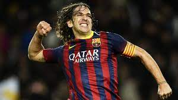

Contact
Home
Registration
There rate of all time player
You may be disagree with me, so I place below some sites with different opinions
1. Lionel Messi
As for me there no other candidats. That man is crazy, look only at his list of trophy and personal awards
2. Pele/Maradona
A lot of expect to see there Cristiano, but my opinion that these 2 are better than him. I dont say that he bad, but not better than king of football and genius Maradona
Additionally info about Pele
Additionally info about Mara
3. Cristiano/Nazario/Best
Everyone who is third in my list is so powerful players, which i'll remember forever, but for some reason(not must their games) make impact to place them here
Cristiano achievements
Additionally info about Nazario
Additionally info about Best
4. Havi/Iniesta/Maldini
As for me all position except forward is understimate. If you play cb or cm ... you cant score decimals goals or do much dribblings and most people(they fool) dont undestand how good are Havi/Iniesta or Maldini. Thats little list but it give us understanding that they not worse than forward. If you start rate players not only by scorring goals and dribbling but also their game IQ, passing etc you notice that Maldini may be equal to Cristiano or Messi
Additionally info about Havi
Additionally info about Iniesta
Additionally info about Maldini
5. Puyol/Zidane

Simply GOAT. Puyol is my idolized defender and Zidane is such a good player and coach, it makes him >>>
Additionally info about Puyol
Additionally info about Zidane